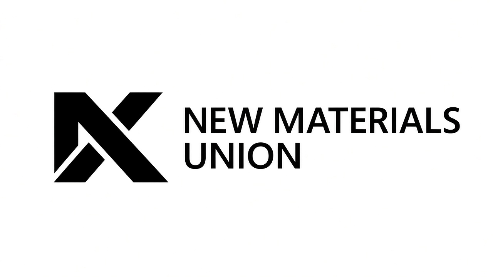
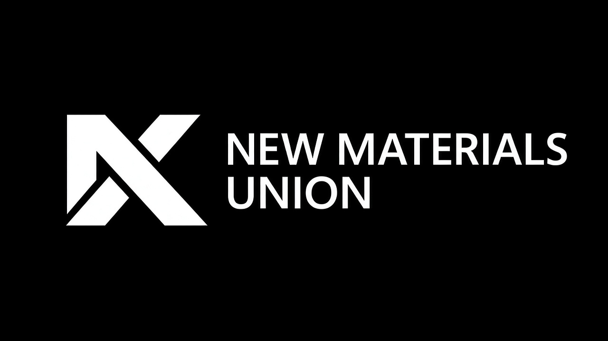
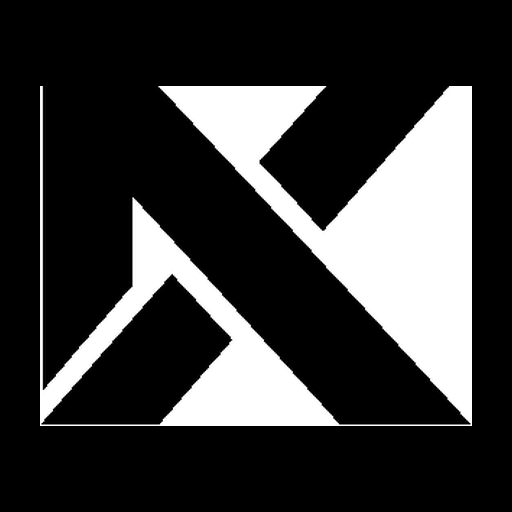
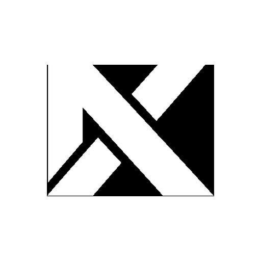

概述 Overview
面向 AI 赋能建筑产业产品的界面组件规范。视觉语言与方案 A Logo 一致：高对比黑白、克制扁平、1px 描边；Blueprint Navy 仅作强调色（链接、焦点环、选中态），绝不填充 Logo。
#1E3A5F 仅点缀；字体 EN Montserrat/Inter · ZH Noto Sans SC；避免圆角卡片阴影的「通用 Material」感。



Logo 用法 Scheme A
导航栏使用横排锁或单独 Mark；头像使用 Avatar 裁切（Mark 居中，留白充足）。深底用白标，浅底用黑标。
导航栏 · 浅色 Nav Light
导航栏 · 深色 Nav Dark
色彩 Colour Tokens
语义色映射到品牌色。主操作使用黑/白（高对比），交互强调使用 Navy。
语义角色 Semantic Roles
| 角色 Role | Token | 浅色 Light | 深色 Dark | 用途 |
|---|---|---|---|---|
| Background | --nmu-bg | #FFFFFF | #000000 | 页面底 |
| Text | --nmu-text | #000000 | #FFFFFF | 正文 |
| Border | --nmu-border | #E8EAED | #2A2A2A | 分隔线 |
| Primary | --nmu-primary | #000000 | #FFFFFF | 主按钮 |
| Accent | --nmu-accent | #1E3A5F | #4A7BA7 | 链接 / Focus / 选中 |
| Danger | --nmu-danger | #B42318 | #F04438 | 错误 / 删除 |
| Success | --nmu-success | #027A48 | #32D583 | 成功反馈 |
字体 Type Scale
EN：Montserrat / Inter · ZH：Noto Sans SC。工业克制，标题半粗，正文常规。Label 大写 + 字距。
间距 Spacing
4px 基准：4 / 8 / 12 / 16 / 24 / 32 / 48。
圆角 / 层级 Radius & Elevation
优先扁平 + 1px 边框。圆角极小（0–4px）。不使用大面积柔和阴影。
模态 / 表格 / 导航
按钮 / 输入框
徽章 / 轻量卡片
按钮 Button
主按钮黑/白填充；次级描边；幽灵透明；危险红。Hover 降低不透明度或浅底，Active 加深，Disabled 40% 透明。
变体 Variants
表单 Input · Textarea · Select
选择控件 Checkbox · Radio · Switch
选中强调使用 Accent Navy；主复选框填充使用 Primary（黑/白）。
选项卡 / 分段 Tabs · Segmented
卡片 / 列表 / 表 Card · List · Table
材料知识库
结构化建筑材料数据与 AI 检索。支持规格、供应商与合规标签。
工地协同 Workspace
跨团队任务、图纸批注与进度同步。Hover 边框转为 Accent。
徽章 / 标签 / 芯片 Badge · Tag · Chip
反馈 Toast · Banner · Modal
确认删除项目？
此操作不可撤销。相关材料关联将被解除，历史记录保留 30 天。
空态 / 加载 / 头像 Empty · Spinner · Avatar
暂无材料
导入清单或从知识库添加第一条记录。
加载 Spinner
头像 Avatar · Mark 裁切
使用 Avatar 资产或 Mark 居中裁切（约 70% 内容区），浅底黑标 / 深底白标。可方可圆。

深色模式 Dark Mode
使用页面右上角切换，或给容器加 data-theme="dark"。深色下 Accent 提亮为 #4A7BA7 以保证对比；Logo 换白标。
设计令牌 Tokens
机器可读源：tokens/tokens.json · 运行时：tokens/tokens.css。在产品中引入 CSS 变量，或将 JSON 导入 Style Dictionary / Figma Tokens。
@import "tokens/tokens.css";
.button-primary {
background: var(--nmu-primary);
color: var(--nmu-primary-fg);
border: 1px solid var(--nmu-primary);
}
.link { color: var(--nmu-accent); }
:focus-visible { outline: 2px solid var(--nmu-focus-ring); }